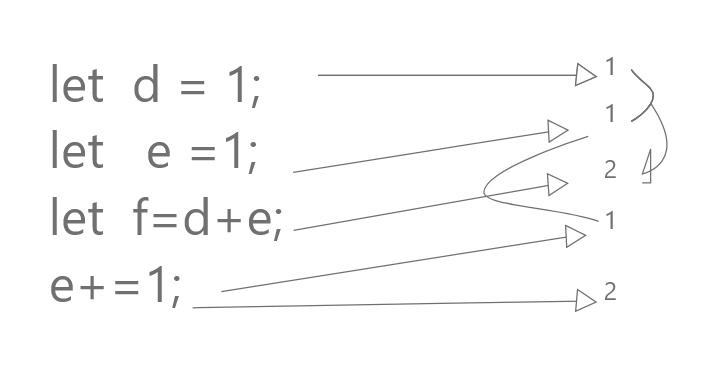

第一週
第二週
第三週
第四週
第五週
第六週
第七週
第八週
第九週
第一週:變數設計
請打開console or Sources,謝謝!
第七題:變數記憶體指向

畫得很爛XD
當 d 宣告時,產生新的記憶體空間紀錄1。
當 e 宣告時,產生新的記憶體空間紀錄1。
當 f 宣告時,產生新的記憶體空間紀錄2(取d跟e的記憶體中的值運算) 。
e 賦值時,產生新的記憶體空間紀錄1(並取e原先的記憶體中的值運算) 。
e 運算時,產生新的記憶體空間紀錄2。
回首頁